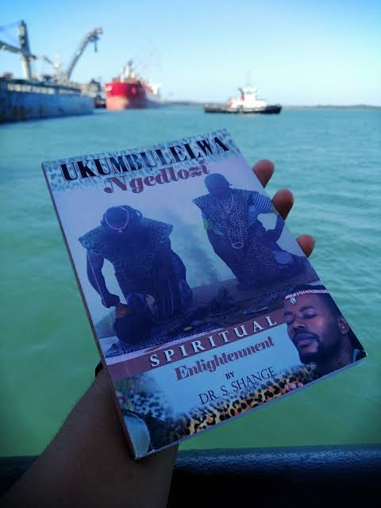

Achievements of Dr. Dumakude

Published Author
Dr. Dumakude is the author of the book "Ukumbulelwa Ngedlozi", sharing his insights into traditional healing practices.
Media Appearances
Featured on various media platforms, including a notable appearance on VOW FM, discussing traditional healing and spirituality.
Mr. South Africa 2024 Contestant
Recognized as a top contestant in the Mr. South Africa 2024 competition, showcasing his commitment to personal development and community engagement.

Social Media Influence
With a substantial following on platforms like Facebook and Instagram, Dr. Dumakude educates and inspires a broad audience on traditional healing.